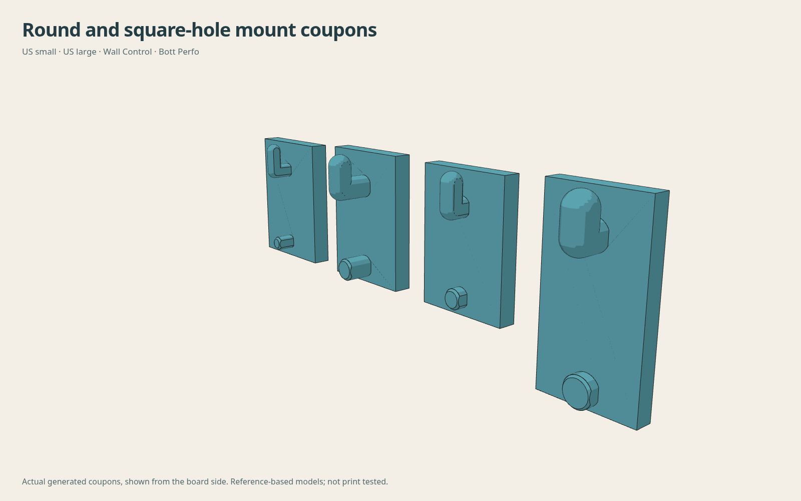
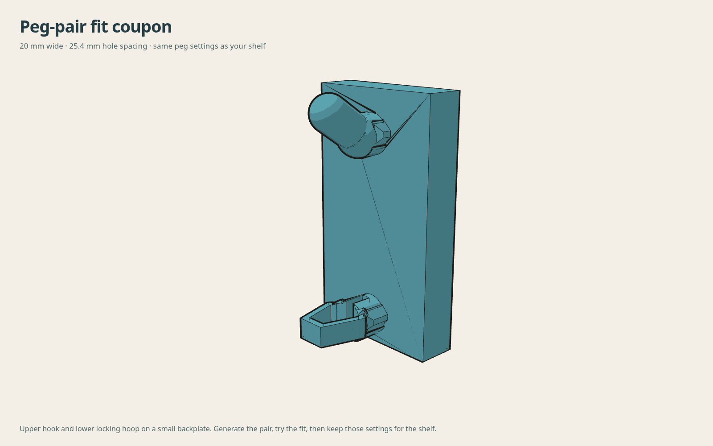

Gridfinity pegboard shelf generator
Configure a Gridfinity shelf for your board and print bed.
Initializing local geometry engine…
Array and reinforcement
Up to 32 cells per direction, 64 cells total. Large arrays can take several minutes; Cancel stops the calculation. Mounts follow the selected board grid. The backplate ends flush with the frame. Gussets follow each Gridfinity cell boundary and meet the front beam, independently of the peg columns. Outer mounts remain inside the frame. The backplate is 5.4 mm thick at the connector roots.
Generated geometry
Print bed and width search
Checks the selected depth, board and bed, including diagonal placement.
Loading geometry viewer…
Dimensions, fit and neighbor spacing
Horizontal neighbor spacing
Export and reinforcement notes
Browser-based compute and render. Geometry is generated on your device; large arrays can take longer.
Reinforcement covers the full peg and backplate thickness and continues into the shelf frame, with a 3.5 mm margin beyond each peg/root envelope. STEP includes separate named solids; set the helper bodies to modifiers at 100% infill. The 3MF already sets those modifiers to 100%. These are overlapping regions of the same part, not extra parts to print.
Instructions, reference and examples
100% infill regions

SKÅDIS mounts

Round and square-hole boards

The US small and large presets start with 3/16 in and 9/32 in holes on a 1 in grid. Wall Control uses its round holes. The metric preset uses 6 mm holes on a 25 mm grid; Bott Perfo uses 9.2 mm square holes on a 38.1 mm grid. Measure your panel thickness independently of the hole size.
Multiboard and HSW inserts

Select Multiboard for its 25 mm grid, or HSW for 23.6 mm vertical spacing with mounting columns aligned to alternate hex columns. The form links to the required inserts. Fit controls adjust screw clearance, head clearance and recess depth.
Backplate and Gridfinity-aligned gussets

Tilted shelves

Printing and fit

The small fit ring lets you dial in bin clearance without printing a whole shelf. Adjust the seat clearance until your bin drops in and lifts out easily.
Print with the flat frame face on the bed—the STL is already oriented that way. For the original round-hole system, one-row mounts use hooks and taller mounts add locking hoops below them. SKÅDIS uses drop-in retaining tails at every mount; support their ledges in this orientation. Use a taller backplate and thicker gussets for deeper shelves.
The earlier 1×1 and 2×1 ASA slices used 0.6 mm nozzle, 0.20 mm layers, three walls, 20% rectilinear, 12 mm³/s and 5,000 mm/s² acceleration, without brim or supports. Those slices predate the solid backplate and mounting-height options. Re-slice all newly generated shelves and inspect the result.
Download fit ring STL · Source files and measurements
Editable CAD and source
The weighted base is available in browser STL, faceted STEP and 3MF exports. The native FreeCAD source supports the frame base only.
FreeCAD generator source with peg-fit controls for the original round-hole system exports native STEP, FCStd and STL with root-wall, connector-preservation and reference-foot checks. Save the parameters above and pass them with --config recipe.json.
New board interfaces are generated directly in the browser CAD source. The reference libraries and their licenses are included with the board sources. Board dimensions and changes.
The browser generator combines the exported connector meshes with parameterized seat and support solids. It checks connected-solid output, front-beam continuity, reference bin-foot clearance and retained board-side geometry before enabling downloads.
Gridfinity receiver dimensions follow Gridfinity Rebuilt. Peg geometry comes from the current peg repository. Sources and asset hashes.
Board fit feedback
Tell me which board you used and how the coupon or shelf fits. Your selected settings are included in the report.
GitHub opens a draft for you to review and submit. Nothing is sent automatically.
Frame or weighted seats and gussets on the 42 mm Gridfinity grid. A solid backplate joins them to the selected board’s mounting grid. Downloads place the frame face on the bed.